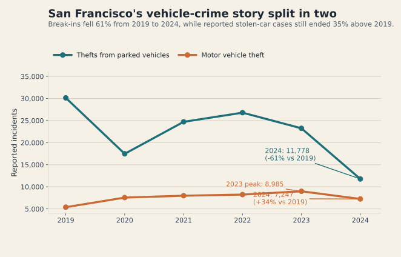

The easiest vehicle-crime story to tell in San Francisco is that the problem got smaller after 2019. That is true if you mean smashed windows. It is much less true if you mean missing cars.
From 2019 to 2024, reported break-ins from parked vehicles fell by about 61%. Reported motor vehicle theft did not follow that path. It peaked in 2023 and still ended 2024 about 35% above its 2019 level. The city's vehicle-crime story did not simply improve. It split in two.
This story uses the San Francisco Police Department's Police Department Incident Reports: 2018 to Present dataset [1] and compares the six full calendar years from 2019 through 2024. I combine the subcategories Theft From Vehicle/Larceny - From Vehicle and Motor Vehicle Theft/Motor Vehicle Theft (Attempted) so the labels stay consistent across the full period. SF.gov's Reported Offenses page also tracks theft from vehicles and motor vehicle theft as distinct parts of the city's official offense picture [3].
The citywide pattern split in two
The first figure shows why a single citywide headline is misleading. Reported break-ins from parked vehicles dropped from 30,134 incidents in 2019 to 11,778 in 2024. Reported motor vehicle theft moved differently: it climbed to a 2023 peak of 8,985 and still finished 2024 at 7,247 incidents, well above the 5,390 cases recorded in 2019.
That break-in decline matches the direction of the city's Annual Performance Report, which says reported thefts from vehicles fell 57% from FY23 to FY24 and reached their lowest level since FY17 [4]. My figure uses calendar years rather than fiscal years, so the counts are not identical to the city's scorecard. The important point is that both views show the same broad split: break-ins collapsed, while stolen-car reports remained elevated.

The geography shifted too
The second change is spatial. In 2019, break-ins were packed into dense commercial and visitor-heavy neighborhoods. Financial District/South Beach recorded 2,111 break-ins, Hayes Valley 1,507, North Beach 1,535, and Russian Hill 1,280. By 2024 those same neighborhoods were far lower.
That downtown contraction overlaps with a city center that still looks different from 2019. SF.gov's Office Vacancy Rate page notes that office vacancy was only 4.70% in the second quarter of 2019 before rising far above pre-pandemic levels, and it describes downtown recovery as tightly connected to office demand and commuter activity [2]. The same page notes that roughly 470,000 people commuted downtown each day before the pandemic. That does not prove why break-ins fell, but it does make the old downtown hotspot pattern easier to understand: fewer commuters and fewer parked cars can mean fewer easy targets.
The map below lets you slide year by year from 2019 to 2024 and toggle break-ins, stolen-car reports, or both at once. Run the slider forward with only break-ins visible and the old downtown cluster thins quickly. Switch on stolen-car reports for the same year and the overlap shifts south and east instead of disappearing.
That pattern is especially clear by 2024. Mission rises from 506 to 851 stolen-car reports over the period, Bayview Hunters Point from 575 to 868, and Excelsior from 125 to 279. The vehicle-crime story therefore becomes less about the old downtown break-in economy and more about a broader residential footprint that you can compare year by year.
Neighborhoods did not move together
The scatter plot combines both changes in one frame. Each point is a neighborhood. Moving left means fewer break-ins in 2024 than in 2019. Moving up means more reported stolen-car cases. The most important quadrant is the upper-left: fewer break-ins, more stolen cars.
Mission is the clearest example. It loses 1,281 break-ins over the period but gains 345 stolen-car reports. Bayview Hunters Point shows the same pattern, with a smaller break-in drop and a larger stolen-car increase of 293. Tenderloin, South of Market, and Excelsior also move into that same upper-left territory. Financial District/South Beach, by contrast, moves sharply left but barely up, which fits the idea that the steepest decline stayed tied to the old downtown break-in pattern.
This is why the safest summary is not that vehicle crime was solved. Police incident data measures reported and recorded events, not a pure underlying level of victimization. Reporting behavior, enforcement practices, commuting patterns, street activity, and vehicle security all shape the numbers. The cleanest reading is that San Francisco's vehicle-crime problem shifted: away from the pre-pandemic downtown break-in economy and toward a wider set of neighborhoods where stolen-car reports remained stubbornly high.
A reader who only sees the break-in collapse could walk away thinking the broader vehicle-crime problem faded with it. The stronger conclusion is narrower and more useful: one form of vehicle crime receded dramatically, but another stayed elevated and shifted to a different neighborhood map.